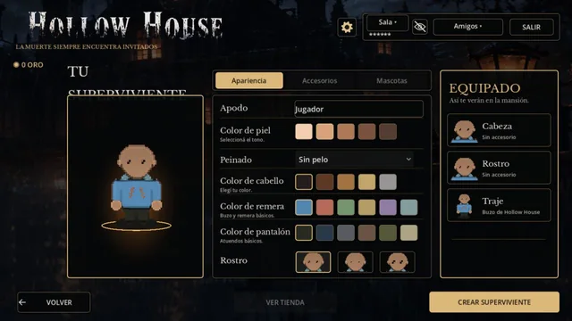
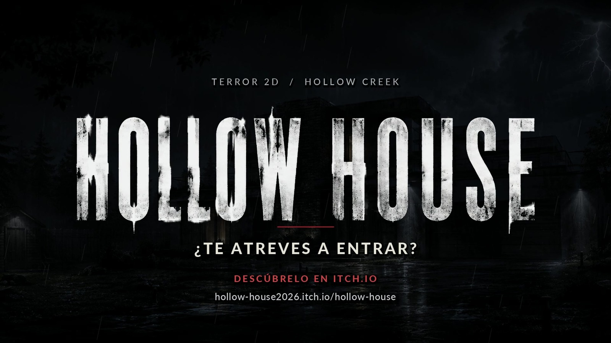

Uno persigue.
Los demás buscan escapar.
En este modo asimétrico, los supervivientes cooperan para escapar mientras otro jugador toma el papel del asesino.
YA DISPONIBLE · WINDOWS · LINUX · WEB EN ITCH.IO
La casa vuelve a llamar. Entra solo, reúne a tus amigos o cambia de bando en La Cacería. Descubre las novedades de Hollow House.
IDIOMAS DEL JUEGO EspañolEnglishPortuguês
ENTRA CON TU GRUPO
Una sala compartida. Dos formas de jugar.
El anfitrión elige entre el Modo Historia cooperativo y La Cacería. Agrega e invita amigos o comparte el código de la sala para organizar la próxima partida.
MODO HISTORIA COOPERATIVO
Recorre la campaña con otros jugadores. Alex y Sebas buscan respuestas en la propiedad Hollow, entre pistas, oscuridad y una amenaza que no les pierde el rastro.
¿Prefieres entrar por tu cuenta? La opción Jugar solo te lleva al Modo Historia y a su selección de dificultad.
MODO ASIMÉTRICO · DESDE LA SALA MULTIJUGADOR
Un jugador es el asesino. Los supervivientes cooperan para escapar.
Selecciona La Cacería en la sala multijugador. El objetivo cambia según tu papel: perseguir al grupo o trabajar juntos para salir con vida.
DOS PAPELES. UNA MISMA PARTIDA.
Busca piezas, repara el auto o pide ayuda por teléfono. Escóndete y rescata a tus compañeros mientras buscan una forma de escapar.
Toma el papel de la amenaza e intenta impedir que escapen.
Consultar los controles →HOLLOW HOUSE · 0.13.40
Juega solo o en multijugador. Disponible en navegador y para descargar en Windows y Linux, desde itch.io. Idiomas del juego: español, inglés y portugués.
En este modo asimétrico, los supervivientes cooperan para escapar mientras otro jugador toma el papel del asesino.
Agrega e invita a tus amigos para volver juntos a Hollow House.
Descubre la tienda de ropa y accesorios para personalizar tu personaje.
La versión 0.13.40 para Linux incluye una sección de mascotas en la personalización.
Modelos actualizados, una nueva introducción y dificultad Fácil para el Modo Historia.
La actualización incorpora compatibilidad con mandos de Xbox y PlayStation.
Leer las novedades oficiales →
Play solo or multiplayer. Available in your browser and as Windows and Linux downloads on itch.io. Game languages: Spanish, English and Portuguese.
Jogue sozinho ou em multijogador. Disponível no navegador e para download em Windows e Linux no itch.io. Idiomas do jogo: espanhol, inglês e português.
MIRA LA ACTUALIZACIÓN
El video oficial de la actualización, sin salir de esta página. También puedes abrirlo directamente en YouTube.
Orienta la linterna y recorre la mansión. Las puertas, los objetos y las habitaciones cuentan más de lo que parece.
Un golpe en el piso de arriba. Un teléfono. Pasos que no son los tuyos. Decidir cuándo seguir puede ser tan importante como encontrar una llave.
Corre, busca dónde esconderte y presta atención a lo que tienes alrededor. No todas las rutas seguirán siendo seguras.
LA HISTORIA
Hollow Creek dejó de hablar del caso, pero nunca dejó de vivir alrededor de él. Comercios que cerraban antes, calles evitadas de noche y familias que seguían esperando una respuesta.
Alex y Sebas entran a la antigua propiedad Hollow cuando tres nuevas desapariciones vuelven a señalar el corredor norte. Buscan una explicación. La casa tiene otros planes.

TRES NUEVAS EDICIONES
Memoria, trabajos nocturnos y preguntas que nunca se convirtieron en respuestas. Ficción del universo de Hollow House.
Después del archivo del expediente, un grupo de familias pidió un gesto sencillo: dejar una lámpara junto a la ventana. No era una señal de victoria. Era una forma de decir que alguien seguía esperando.
Leer edición →GAZETTE / 2018No hizo falta cerrar North Road para que una parte de Hollow Creek dejara de usarla. Años después de los crímenes, trabajadores y comercios seguían pagando el precio de evitarla.
Leer edición →GAZETTE / 2026Una fotografía, una herramienta y versiones que crecieron al ser copiadas. El archivo del Gazette vuelve sobre lo que puede atribuirse al caso y lo que continúa sin identificar.
Leer edición →DENTRO DEL JUEGO
Capturas de la versión pública 0.13.40 para Linux. Toca una imagen para verla completa.



HOLLOW HOUSE
En itch.io están las descargas para Windows y Linux y la versión web. Puedes recorrer el archivo de Hollow Creek y ver el tráiler con gameplay real.
¿Encontraste un error o tienes una sugerencia? El contacto directo es hollowhouse54@gmail.com.
WINDOWS · LINUX · WEB EN ITCH.IO
El caso continúa dentro de Hollow House.